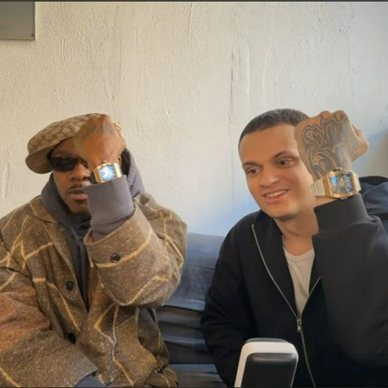

О нас
Добро пожаловать на страницу, где мы расскажем о легендарных жителях 214 комнаты. Здесь каждый оставил свой след в истории!
Никита Кузнецов
Никита — уже не живёт в нашей комнате, но его имя навсегда вписано в историю 214. Этот человек запомнился нам своими уникальными талантами: он мастерски брызгал хуйней по стенам и устраивал газовые атаки, от которых даже коты в радиусе 5 метров теряли сознание. Мы скучаем по его безумным выходкам и помним его как легенду комнаты.
Рома Бабарика
Рома — создатель этого сайта и настоящий красавчик. Он обладает редким талантом превращать хаос нашей комнаты в красивый и структурированный контент. Если бы не он, никто бы никогда не узнал о наших героических буднях. Рома — душа компании и надежный товарищ, который всегда поддержит в трудную минуту.
Лев Шишкин
Лев — легенда матфака и гордость нашей комнаты. Этот парень умеет всё: решать сложные задачи, рассказывать анекдоты и делать так, чтобы все вокруг чувствовали себя комфортно. Однако есть одно правило: не бейте его! Это священный закон 214, и за его нарушение придётся отвечать перед всей комнатой.